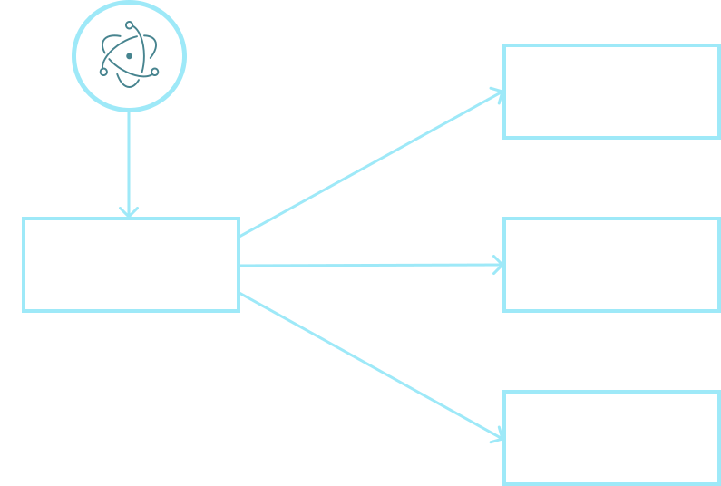

Electron.js
electronjs.org
What is Electron.js?
Framework for building desktop applications using JavaScript, HTML, and CSS.
It’s an open source project started by Cheng Zhao, an engineer at GitHub.
Applications based on Electron.js
Advantages
For business
-
Simple way to create cross-platform applications
-
Creating a desktop application for an existing web application
-
Cheaper and faster to develop
For developers
- One code for Windows, macOS, and Linux.
- Easy to test
- One programming language
Superiority over web applications
- Access the filesystem and operating system APIs
- Does not require an internet connection
- Enhanced privileges and looser restrictions
Disadvantages
- Large size
- Resources grabbing
- Specific requirements
How it work?
|
Chromium
|
Node.js
|
- Rendering HTML
and CSS
- Document Object
Model (DOM)
- Web APIs
|
- Filesystem access
- Support for compiled modules
- CommonJS Module
|
Electron.js app architecture

|
Main process
|
Render processes
|
- Handles OS integration
- Manages the lifecycle of the application
- Creates renderer processes
|
- display the UI
- respond to user events
|
Thank you for your attention!